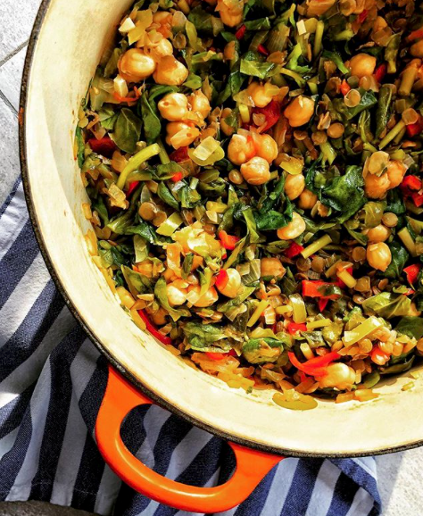

Semizotu, yesil mercimek ve nohut! Ucu de ayri ayri cok sevdigim yiyecekler. Gecen gun bunlarin hepsinin beraber oldugu bir fotograf gorunce aklima düsmüstü. Dun aksam klasik anne versiyonu haliyle pisirdim??
Yarim su bardagi nohut 1 su bardagi yesil mercimek 2-3 kuru sogan (anahtar cumle; ne kadar cok sogan o kadar cok lezzet!) Zeytinyagi 2 dis sarimsak 2 sivri biber 2 kapya biber (varsa, yoksa sorun degil) Birer tatli kasigi biber ve domates salçasi 1 bag semizotu 2-3 domates 1 cay bardagi sicak su Tuz
Nohutu bir gece onceden islatin. Ertesi gun nohut ve yesil mercimegi ayri ayri haslayin ve sularini suzun. Tencereye zeytinyagini alin, yemeklik dogranmis soganlari, sarimsagi ve minik minik dogranmis biberleri ekleyip kavurun. Salcalari ekleyip 1-2 kez daha karistirin. Dogranmis domatesleri ekleyip birkac dakika kavurun. Yikanmis ve dogranmis semizotlarini ilave edin. Uzerine yesil mercimek ve nohutu ekleyip pisirin. Suyu az gelirse ilave edin. Tuzunu ekleyip servis yapin. (Fotograf ben suyunu eklemeden hemen oncesi)